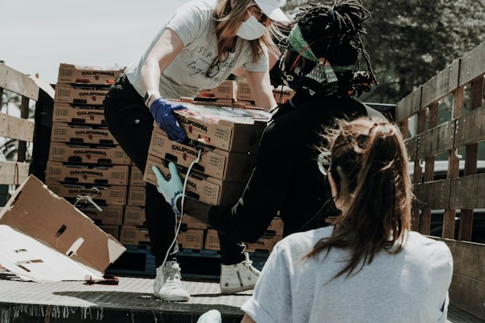

Pilier 01
Une Église Vivante
Une communauté vibrante d'amour fraternel et de louange sincère, habitée par le Saint-Esprit et engagée dans l'intercession continue pour les familles et la nation.
En savoir plusBienvenue à l'Église Évangélique Union Renaissance d’Hommes en Christ. Nous sommes une communauté unie par l'amour de Dieu, consacrée à l'enseignement des Écritures, à la sanctification et au rayonnement de l'Évangile.
« Si quelqu'un est en Christ, il est une nouvelle créature. Les choses anciennes sont passées ; voici, toutes choses sont devenues nouvelles. »2 Corinthiens 5:17 — Parole Éternelle
Depuis plus de cinq décennies, l'Église Évangélique Union Renaissance d’Hommes en Christ proclame la bonne nouvelle du salut en Jésus-Christ avec fidélité, simplicité et ferveur.
Notre vocation est de rassembler hommes, femmes, jeunes et enfants dans une communion fraternelle authentique, enracinée dans la sainte doctrine et activement engagée au service du bien commun.

L'URHC s'appuie sur la vérité inaltérable de la Parole de Dieu pour équiper les croyants face aux défis de leur génération.
Une communauté vibrante d'amour fraternel et de louange sincère, habitée par le Saint-Esprit et engagée dans l'intercession continue pour les familles et la nation.
En savoir plusUn attachement sans compromis à l'autorité souveraine de la Bible, à la saine doctrine du salut par grâce et à la sanctification quotidienne de chaque croyant.
Nos affirmationsLa joyeuse assurance de la résurrection en Christ et de son glorieux retour, moteur inébranlable de notre compassion envers les personnes éprouvées.
Nos engagementsChaque rassemblement est une opportunité bénie d'adorer le Dieu vivant, d'être instruit par sa sainte Parole et de partager une réelle communion fraternelle.
Culte Dominical d'Adoration
Chaque Dimanche à 10h00
Étude Biblique & Doctrine
Chaque Mercredi à 18h30
Veillée de Prière & Intercession
Chaque Vendredi à 19h00
Que vous veniez pour la toute première fois ou que vous cherchiez un foyer spirituel durable, vous serez reçu avec bienveillance et respect fraternel.
Chaque croyant a reçu des dons de la part de Dieu pour l'édification de tous. Découvrez les différents départements où vous pouvez grandir et servir.
 Liturgie
Liturgie
Conduire l'assemblée des fidèles dans une célébration digne, fervente et sanctifiée devant le Seigneur par les psaumes et les cantiques spirituels.
Découvrir ce ministère Édification
Édification
Approfondir la compréhension de la doctrine apostolique, former les disciples de Jésus-Christ et affermir les fondements de la foi chrétienne.
Découvrir ce ministère
CompassionTémoigner de l'amour du Christ par des actes concrets de solidarité envers les veuves, les orphelins, les malades et les personnes vulnérables.
Découvrir ce ministèreÉcoutez les messages récents dispensés dans notre assemblée pour affermir votre marche quotidienne avec le Seigneur.
Comment la prière collective fervente et continue renverse les obstacles spirituels et fait descendre la paix divine dans les foyers.
Comprendre la certitude des promesses éternelles accordées par le sang de l'alliance nouvelle et vivre dans la plénitude du salut.
La discipline spirituelle des pensées et la veille intérieure face aux séductions contemporaines pour plaire au Seigneur.
Découvrez les conventions spirituelles, séminaires de formation et rassemblements solennels programmés au sein de notre communauté.
Trois jours solennels de louange, d'écoute de la Parole de Dieu et de prières pour le réveil spirituel, la restauration des familles et la bénédiction de la cité.
Journée de réflexion et d'équipement pratique : concilier engagement chrétien, responsabilités professionnelles et témoignage éthique au quotidien.
« Ils l'ont vaincu à cause du sang de l'Agneau et à cause de la parole de leur témoignage. » — Apocalypse 12:11
« Lorsque j'ai franchi les portes de l'URHC, j'étais brisé par les épreuves. Les enseignements bibliques et la prière persévérante des frères ont restauré mon foyer et ranimé mon espérance. »

« À travers le département des jeunes, j'ai découvert une véritable famille spirituelle et une formation rigoureuse dans les Écritures. Cela m'a appris à vivre ma foi chrétienne sans honte. »

« La fidélité doctrinale de l'Église et la profondeur des études bibliques hebdomadaires m'ont permis de sortir de la confusion pour m'ancrer fermement dans la grâce souveraine du salut. »

Votre soutien par vos prières, votre présence fraternelle et vos dîmes et offrandes permet de maintenir les cultes, de porter secours aux démunis et d'annoncer l'Évangile avec zèle.